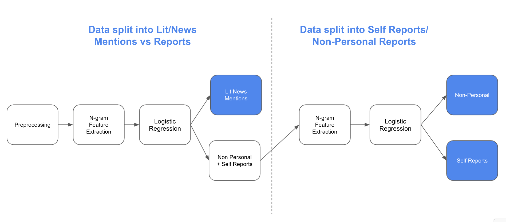

Natural Language Processing Classification of Covid Tweets
Table of Contents
1. Introduction
2. Exploratory Data Analysis
3. Data Preprocessing
4. Natural Language Processing Models
5. Conclusion
6. Member Contributions
1. Overview
This project is an attempt at the Social Media Mining for Health Task 6. The goal of this task was to classify tweets containing mentions of covid-19 as either self-reported, non-personal reports, or literature and news mentions of covid-19. Examples of tweets in each category can be seen below:
The data included 6000+ annotated tweets from which we trained and tested our models.
2. Exploratory Data Analysis
Preprocessing
We examined characteristics of the data, looking at metrics such as the document frequency, and frequency of non-stop words grouped by label. This allowed us to understand key words or phrases to identify that informed model decisions. We identified the distribution of labels in the dataset and manually read through tweets of each category. Please observe the figures below for graphic representation of results.
Key Observations
The most informative takeaway was there seemed to be key features of literary news tweets that didn’t occur in the self-report or non-personal tweets, and that the differences between self-report and non-personal tweets was the subject of the tweet that interacted with the covid symptoms.
We hypothesize that the difficulties in differentiating between self-report and non-personal tweets is the grammar involved. For example, in the phrase “She got more cough medicine for me. Covid sucks.”, we know that she is the actor, but the author is the one with covid. Understanding who the covid-related word relates to in a sentence would help differentiate this from a phrase such as “She got more cough medicine. Covid sucks”, which more likely indicates that she has covid. Please also see figure 4 in the appendix for an additional example. We initially hoped to feature engineer PoS tags to help the model differentiate but had difficulties utilizing tweet-trained models. We hope to bypass this by utilizing a neural network in future models.
3. Data Preprocessing
Reading in the Data
To preprocess our data, we removed stop words, removed punctuation, made all text lowercase, removed @ mentions, removed digits, and stemmed the text. To test our data, we split out data into an 80/20 train/test groups with a constant seed for repeatability. For feature extraction, we tokenized into TF-IDF vectors using unigrams to trigrams (with a minimum document frequency of 100) to gather features.
4. Natural Language Processing Models
Classical Machine Learning Attempts
Following preprocessing, we implemented weighted SVM models, logistic regression models and KNN classification models. The logistic regression model performed the best with F1 scores of .98, 95, and 89, on the lit-news, non-personal and self-report categories respectively. For a visual representation of the LR model, please see figure 1. The parameters of the best logistic regression model were l2 for penalization, a C value of 1.0, and an L-BFGS solver.
Two Step Binary Classification Model
Utilizing the information from our EDA, we hypothesized that creating two sets of binary classification models would help improve our F1 scores between the self-report and non-personal categories. The first binary split includes differentiating between [lit news] and [self-report, non-personal] tweets. The second binary split differentiates between [self-report] and [non-personal] tweets. For the second binary split, we lowered the minimum frequency requirement for the n-grams to 10 tweets and the F scores improved. The F1 scores for this attempt were .98, .93, and .86, slightly lower than the F1 scores of the 3-way classification model. All classifiers in this case were logistic regression models with identical parameters to the best performing model in our previous attempts.
Neural Classification Model
Additionally, our team implemented a feed forward neural classifier model to examine its classification performance. To featurize our training data for the network, we first preprocessed our data and tokenized them. Following tokenization, we padded the observations to the max sequence length and subsequently. The first layer of the network was an embedding layer, where word values were mapped to their respective 300-dimensional GloVe embedding. Following the embedding layer, we introduced 2 dense layers of 128 nodes each with tanh activation function, with a final dense layer of 3 nodes with softmax activation to output probabilities. The model was trained with sparse categorical cross entropy loss function and an adam optimizer for 50 epochs. This classification model gave us an accuracy of 92%. We found that this model did not perform as well as our simple logistic regression model.
5. Conclusion
Takeaways
Binary classification scored slightly worse than a simple LR model. This might be because the training data size is significantly reduced in the second binary classification.
Grammar is a large component of differentiating self-reports and non-personal and is difficult to capture and represent.
Lit-News did the best, could be because it has the most training data, or because it is the most distinct category when represented through n-grams
Proposed Future Studies
Future studies could improve upon the current model in the following ways:
1. Incorporating grammar into the model. This could be done by PoS tagging that has been trained on tweets. Our EDA concluded grammar was an important defining characteristic between non-personal reports and self-reports, therefore, this split may be useful on the second step of the two step binary classification, where the model splits between those two categories.
2. Incorporating additional contextual methods such as an LSTM or different RNN.
3. Utilizing entity recognition, not just Bag of Words.
6. Member Contributions
Everyone
Each person was responsible for exploratory data analysis and testing different algorithms on the problem. The majority of the work done for this project occurred over group zoom meetings where all members were present and contributing.
Sulayman
Sulayman was the quickest coder. When zooming together to work on the project, he would take lead over the actual code contributions while Fernando and Lauren spotted code errors, feature contributions, wrote code snippets, model tweaks, conceptualizations and identified next steps.
Lauren
Lauren went through and manually looked at the tweets to derive insight. She utilized this, and the EDA to conceptualize the two-step binary classification. She also took primary responsibility over the PowerPoint presentation, report and accompanying diagrams.
Fernando
Fernando ran the classification models on the test data to get the predictions. Took responsibility in showcasing the EDA during the project presentation.